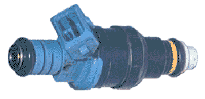
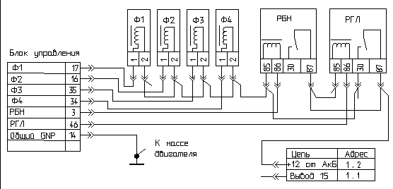
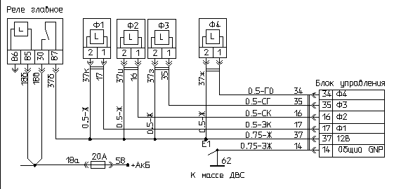

главная → ЭСУД ГАЗ
Форсунка топливная EV1.3C 0280150902 (BOSCH)
Назначение электромеханизма. Принцип действия
- Форсунка предназначена для дозирования и тонкого распыления топлива в сторону впускного клапана цилиндра двигателя.
- Форсунка представляет собой прецизионный гидравлический клапан с приводом от быстродействующего электромагнита.
- Упрощенно конструктивная схема включает игольчатый клапан и электромагнит в общем корпусе. В обесточенном состоянии обмотки электромагнита клапан прижат пружиной к седлу клапана. Концы обмотки электромагнита выведены наружу через изолированные от корпуса электрические контакты. Топливо от топливной рампы через входной штуцер подводится вовнутрь корпуса форсунки через дополнительный сетчатый фильтр, предохраняющий полость форсунки, распылитель и отвертстие клапана от загрязнения. Дозирующее сечение распылителя представляет собой кольцевую щель шириной 0,085 мм.
- Электропитание форсунки (второй вывод обмотки) осуществляется от бортовой сети через главное реле, а включение форсунки производится путем замыкания на массу первого вывода обмотки через силовой канал блока управления.
- При постоянном относительном давлении топлива в магистрали и напряжения питания электромагнита объем дозируемого топлива пропорционален длительности управляющего импульса включения форсунки. Длительность импульса управления форсункой (длительность впрыска) колеблется от сотен миллисекунд на запуске двигателя до нескольких миллисекунд на режиме холостого хода. В режиме ЭПХХ блок управления отключает форсунки, прекращая подачу топлива в двигатель, что обеспечивает дополнительную экономию топлива.
Конструкция электромеханизма

- Конструктивно электромеханизм состоит из следующих элементов:
- корпус с впускным и выпускным штуцерами, внутри которого размещены подпружиненный игольчатый клапан и обмотка электромагнита;
- уплотнительные резиновые кольца на концах штуцеров;
- двухконтактная вилка соединителя, опрессованная в корпусе.
Параметры электромеханизма
- Статическая производительность: 2,595г/с.
- Активное сопротивление обмотки: 16±1 Ом.
- Индуктивность обмотки на частоте 100 Гц: 12±2мГн,
- Напряжение электропитания: 6...18В.
- Ход запорного элемента: 0,16мм.
- Время срабатывания клапана: 1,5мс.
- Время отпускания клапана: 1,3мс.
- Производительность форсунки зависит не только от давления топлива, но и от величины бортового напряжения, которым запитана форсунка (с ростом напряжения производительность форсунки растет эквидистантно). Эта поправка по величине бортового напряжения учитывается в программе блока управления при расчете длительности впрыска.
Установка и монтаж электромеханизма на автомобиле
- Форсунки устанавливаются в специальные седла-отверстия головки блока цилиндров двигателя и прижимаются сверху топливной рампой.
- Уплотнение топливных соединений форсунок выполняется резиновыми кольцами.
- Подключение каждой форсунки к жгуту проводов производится посредством двухконтактной розетки с защелкой, имеющей специальный цилиндрический паз.
Аналоги электромеханизма
- Форсунки EV-1.3C 0280150902 (BOSCH) предназначены для установки, в основном, на автомобильные двигатели УМЗ-4213.10 и УМЗ-420.10.
- Полные аналоги данной форсунки отсутствуют.
- При проведении ремонтных работ могут устанавливаться:
- форсунка EV-1.3C 0280707569 (BOSCH);
- форсунка DEKA-1A ZMZ (SIEMENS).
- После замены форсунок необходимо выполнить регулировку CO на холостом ходу.
Внешние проявления неисправностей цепей электромеханизма
Схема включения форсунок на автомобиле ГАЗ.

Схема включения форсунок на автомобиле УАЗ.

- Лампа неисправности горит после включения зажигания. Самодиагностика блока фиксирует коды неисправности 131...143 (156).
- Проверьте исправность цепей форсунок: 17(37к), 16(37и), 35(37з), 34(37ж).
- Двигатель работает с перебоями («троение» или «двоение»). Лампа неисправности мигает бессистемно. Система самодиагностики блока фиксирует однократные коды неисправности 131...143 (156).
- Проверить контакты в электрических соединителях форсунок.
- Двигатель работает с перебоями («троение»). Лампа неисправности не горит (нет неисправностей системы).
- Выявить методом отключения форсунок неработающий цилиндр. Проверить параметры неработающей форсунки и при необходимости заменить ее на исправную. Выполнить профилактику фильтров очистки топлива. При замене форсунок сбросить давление в топливной магистрали.
|